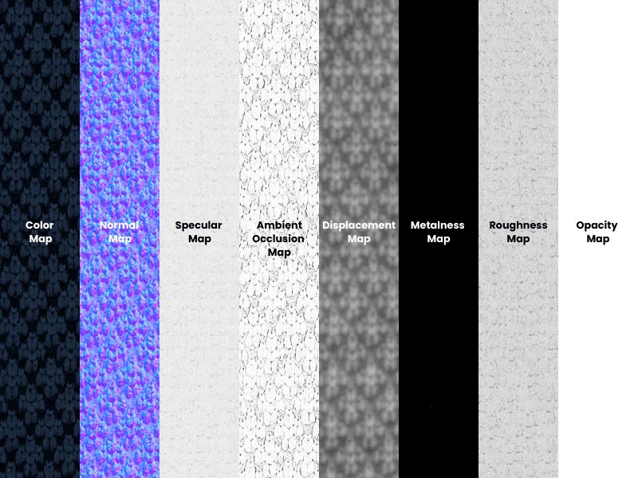

Reconstitution du tableau
Vue 3D temps réel : utilisez la souris pour orbiter, molette pour zoomer.
Tableau de référence

Vue 3D temps réel : utilisez la souris pour orbiter, molette pour zoomer.
Scène Three.js : une nature morte médiévale posée sur une table en bois avec un casque, parchemin, verre de vin, bougie, et un petit miroir rond accroché au mur.
Formes: Tout est construit à partir des géométries de
base (boîte, plan, cylindre, sphère, tore) afin d'économiser de la mémoire.
Le pied du verre est tourné
avec LatheGeometry, la lame de l'épée extrudée avec
ExtrudeGeometry. Seul le casque vient d'un fichier
.obj en raisons de sa complexité.
Textures: Pour rester sous 2 Mo, aucune image n'est chargée : la pierre, le bois, le parchemin, l'acier du casque, la flamme, et même la skybox sont dessinés au démarrage sur des canvas HTML5. Toutes les normales sont calculées à partir de ces mêmes dessins, donc le relief tombe pile sur les motifs.
Casque: L'OBJ modélisé sur Blender
Effets: Brouillard exponentiel, miroir physique
(Reflector), tone mapping ACES Filmic, vignette en
seconde passe, particules de poussière en Points, et
un filtre Kuwahara optionnel pour donner un rendu peinture à l'huile.
Interaction: Caméra orbitale à la souris, panneau
lil-gui pour régler les lumières, le brouillard et les
effets en direct.
Textures Maps : Plusieurs textures maps ont été utilisers afin de rendre compte d'effets de profondeurs tout en gardant la taille de fichier bas (en n'important pas une mesh high resolution mais plutot en usant de substitus afin de mettre en volume un objet low poly).
Pour cela il existe différentes maps dont nous avons fait usage :
